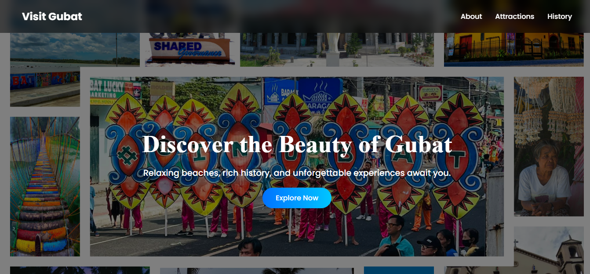
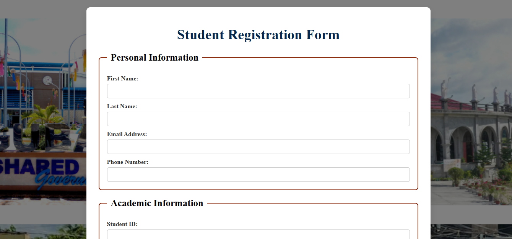
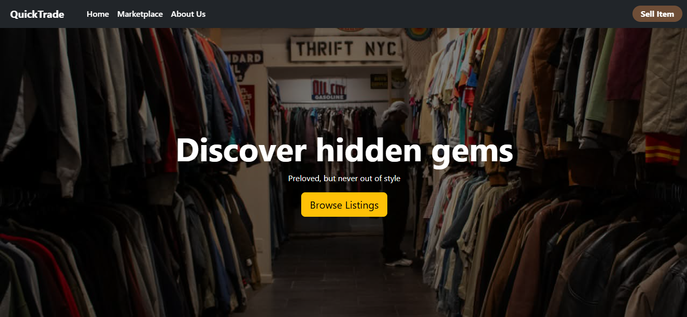
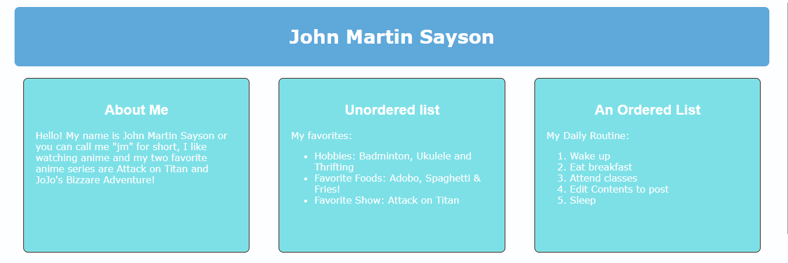

I am a IT student in Sorsogon State University - Bulan Campus, I am passionate about building websites and e-commerce marketing.
Hello! I am John Martin Sayson, an Information Technology student with a passion for programming and web development. I enjoy creating website, and designing user interfaces. I am currently studying Digital Marketing & E-commerce on coursera.
Some of the projects I have created include a Tourist spot website where you can see the available tourist spot in Gubat, a website of a coffee shop showing the menu, and what the coffee shop is about. And a thrifting marketplace platform where people can buy or sell their thrifted clothing or pre-loved apparels called QuickTrade.
Semantic webpage structure
Responsive layouts
Database queries
Clean modern interfaces

A website created to showcase the beautiful Tourists Spot in Gubat.


A simple website thrifting marketplace where users can post and sell their thrifted or pre-loved items.

An Autobiography showing our hobbies, daily routine, favorite food, favorite subjects, and about ourself.